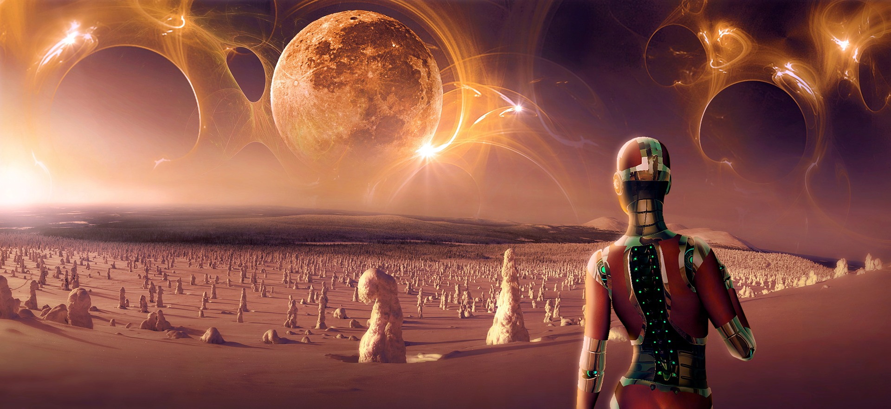

Narrativa e Generi
Narrativa di Fantascienza e Sottogeneri
14 aprile 2021

Nonostante la fantascienza tratti spesso una “scienza speculativa” ambientata nel futuro, questa è solo una definizione vasta e imprecisa, e si suddivide in una miriade di sottogeneri.
Come per il fantasy, esistono due grandi categorizzazioni che tendono a creare una spaccatura tra i cultori.
Hard Sci-Fi
Il centro gravitazionale di questo genere sono tecnologia e scienza, trattate con attenzione rigorosa. La trama della storia tende a ruotare intorno agli effetti diretti della tecnologia e sul suo funzionamento.
Per poter gestire un genere così specifico, l’autore deve avere una grande comprensione e dominanza degli aspetti tecnici di cui tratterà.
L’esempio perfetto di Hard Sci-Fi è The Martian di Andy Weir, o The Three-Body Problem, di Cixin Liu.
Soft Sci-Fi
Tendo ad associare il termine a tutto quello che non è hard sci-fi. Nella fantascienza soft possiamo infilarci tutto il technobabble (tecnogergo) che vogliamo… nessuno può mettere in dubbio le leggi fisiche che muovono il mio “termonucleatore bidirezionale”, ha (purché siano coerenti con sé stesse)!
In realtà la fantascienza soft è molto di più: si sviluppa intorno alla psicologia dei personaggi, esplora realtà distopiche o in cui la società è evoluta e cambiata, specula su possibilità future.
Non si focalizza tanto su come funziona la tecnologia, ma su come questa influenza la società.
Come sempre, ci sono sfumature e crossover tra tutte le tipologie, e così vale per i vari sottogeneri elencati qui sotto:
 Military Sci-Fi
Military Sci-Fi
Spesso la ritroviamo nel ramo della hard sci-fi. Esplora la tematica della guerra in scenari alieni, nello spazio o su altri mondi. La tecnologia è futuristica e include armature bioniche, soldati geneticamente modificati, astronavi e armi high-tech.
Il nome deriva proprio dalla spiccata presenza dell'aspetto militaristico.
Science-Fantasy
Un ibrido tra i due generi. Contiene elementi tecnologici ma anche puramente magici. Una spada medievale che s’infiamma è fantasy, un fucile che spara proiettili che squarciano buchi neri nel cosmo sarà science-fantasy.
Il Ciclo di Darkover, Warhammer 40.000 e Star Wars sono esempi di science-fantasy.
Space Opera
Sparatorie, azione, la lotta del bene contro il male e una sana dose di umorismo spicciolo... il nostro adorato Star Wars è il capostipite di questo genere. Firefly è un altro esempio, dove i “buoni” combattono contro i “cattivi” a bordo di un’astronave. Rientra nello spettro della fantascienza soft e ogni elemento - battaglie, personaggi, ambientazioni - è su larga scala, un po' come l'epic fantasy.
Cyberpunk
Neon, colori accecanti, innesti neurologici e cibernetica, il genere tratta tematiche riguardanti il conflitto tra l’essere umano e la tecnologia. Ora come ora può anche essere usato per descrivere l’ambientazione e le caratteristiche che risaltano in una storia.
The Matrix è un esempio di questo genere.
Distopico
Un futuro dove la tecnologia ha preso il sopravvento e ha vincolato la società a comportamenti limitanti e trattati come negativi. Spesso è caratterizzata da un governo dispotico e dalla totale assenza di libertà individuale. La lotta dei personaggi tende a incentrarsi contro la società.